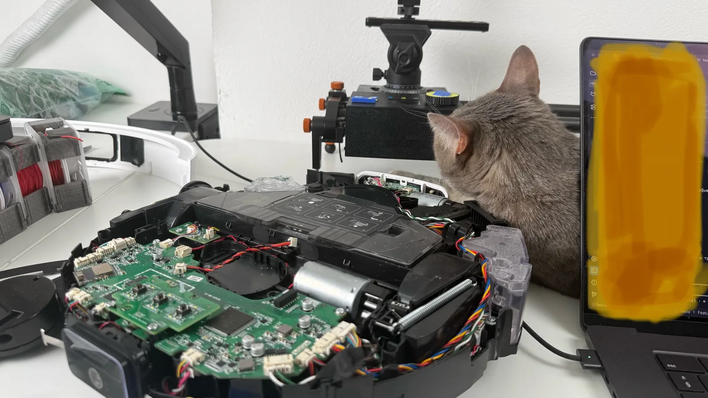
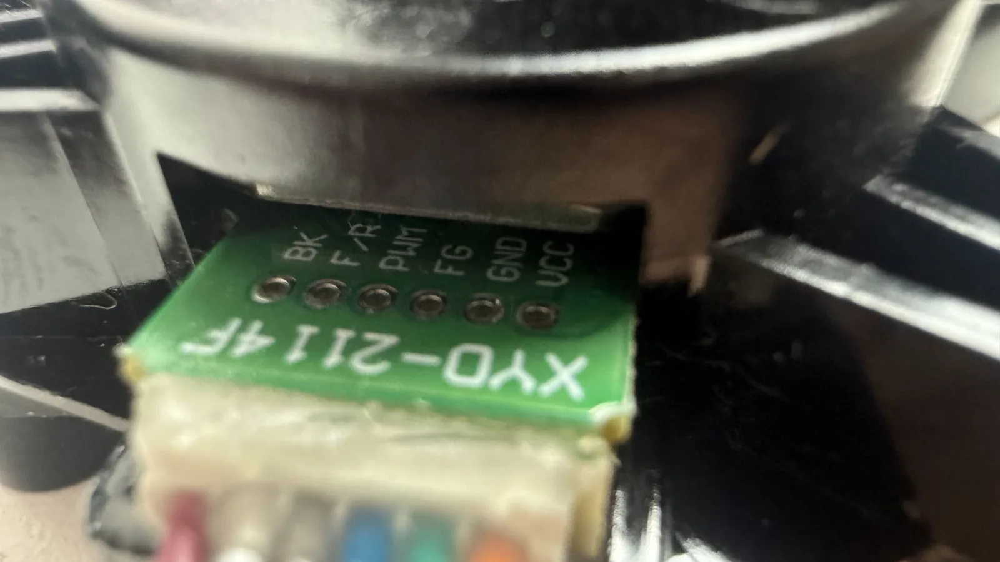
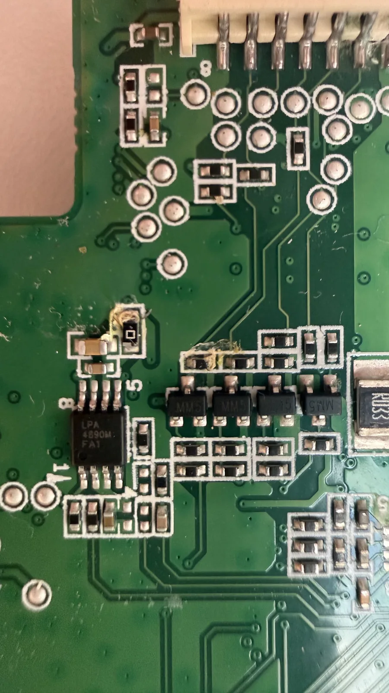

← all notes
For a few days now I've been living with a robot vacuum on my desk. Here's the thing: a few months ago my robot vacuum ran into a surprise left by the cat. Twice, actually. The first time I managed to clean it up more or less, but the second time it got so clogged that I couldn't clean it properly without taking it apart. At some point I disassembled it and cleaned it, but afterward one of the wheels stopped working.
About a week ago I finally got around to it: took it apart, checked the wheel's ribbon cable, made sure I hadn't kinked it. That was the most obvious suspect, and that's where I stopped last time.
Also, last time, after partially disassembling one of the motors, I found the pinout and did a quick check of the main signals and power with a multimeter — no oscilloscope. The wheel looked relatively alive; I didn't run detailed tests.
Before digging into the logic analysis, I did a simpler test: swapped the two wheels — and the old wheel worked fine in the other spot. So the fault is somewhere on the board, and I was really hoping the problem was in the wheel itself, since that can be swapped for a ready-made module for a few dozen euros.
I was wary of the mainboard for two reasons. First, it's a fairly complex assembly. Second, there's no guarantee the fault is actually there — it could be elsewhere, and if I bought a new mainboard I might end up frying that one too. So I had some fairly serious stuff to dig into.
But once I finally committed and pulled the mainboard, I saw a pretty obvious spot of corrosion and oxidation.
Now I'll try to clean all that up and restore the board. Hoping nothing irreversible happened. I do wish I had a proper microscope.
05.09.2026#diy #electronics

For a few days now I've been living with a robot vacuum on my desk. Here's the thing: a few months ago my robot vacuum ran into a surprise left by the cat. Twice, actually. The first time I managed to clean it up more or less, but the second time it got so clogged that I couldn't clean it properly without taking it apart. At some point I disassembled it and cleaned it, but afterward one of the wheels stopped working.
About a week ago I finally got around to it: took it apart, checked the wheel's ribbon cable, made sure I hadn't kinked it. That was the most obvious suspect, and that's where I stopped last time.
Also, last time, after partially disassembling one of the motors, I found the pinout and did a quick check of the main signals and power with a multimeter — no oscilloscope. The wheel looked relatively alive; I didn't run detailed tests.

Before digging into the logic analysis, I did a simpler test: swapped the two wheels — and the old wheel worked fine in the other spot. So the fault is somewhere on the board, and I was really hoping the problem was in the wheel itself, since that can be swapped for a ready-made module for a few dozen euros.
I was wary of the mainboard for two reasons. First, it's a fairly complex assembly. Second, there's no guarantee the fault is actually there — it could be elsewhere, and if I bought a new mainboard I might end up frying that one too. So I had some fairly serious stuff to dig into.
But once I finally committed and pulled the mainboard, I saw a pretty obvious spot of corrosion and oxidation.

Now I'll try to clean all that up and restore the board. Hoping nothing irreversible happened. I do wish I had a proper microscope.
Comments